MoeLogViewer 詳細 MoeLogViewer とは 旧バージョンをお使いの方はページ下部に注意点があります MoEのログファイルから特定のログを抽出するツール。 トレハンとか育成に便利！ 例えば育成のログ 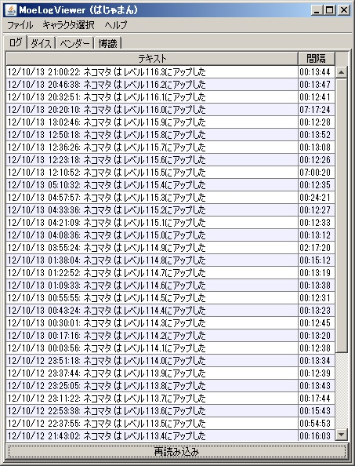 例えばトレハンのログ （２枚の画像は同じログを設定変更して撮影しています） 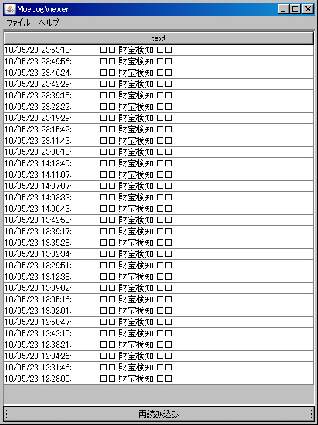 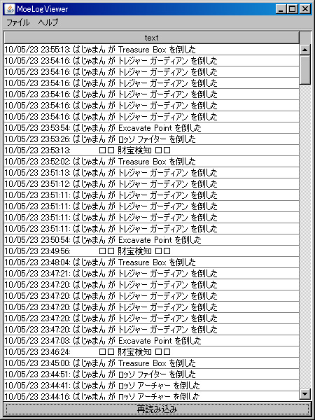 2012/01/01 追加されたダイスタブ 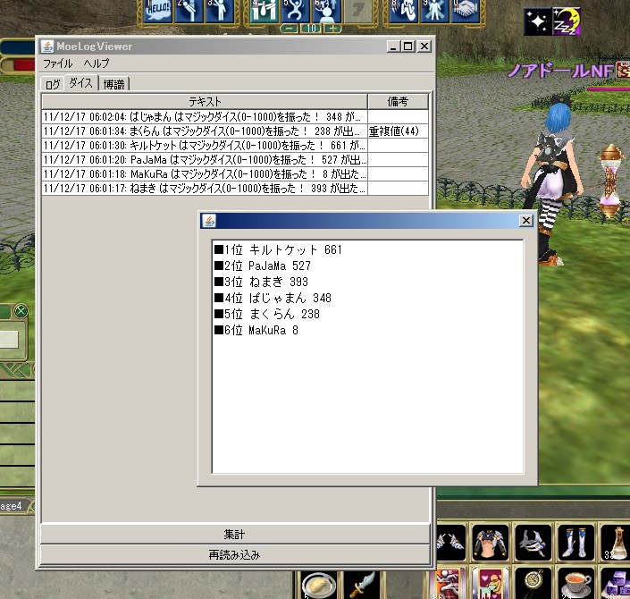 2012/01/04 追加された博識タブ 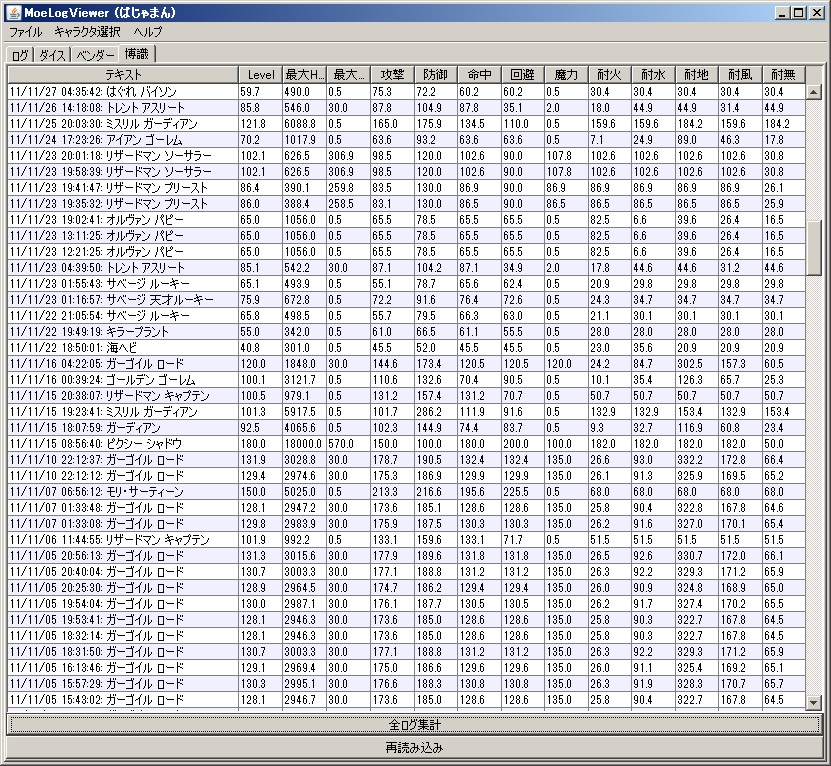 2012/11/12 追加されたベンダータブ 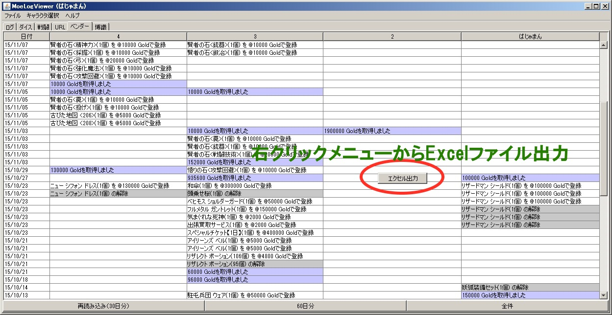 2012/12/31 追加された戦闘タブ 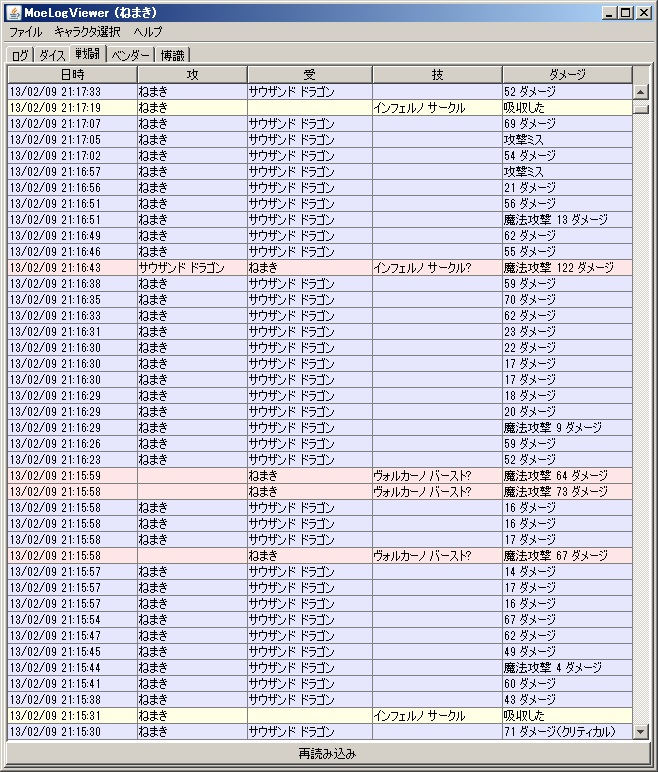 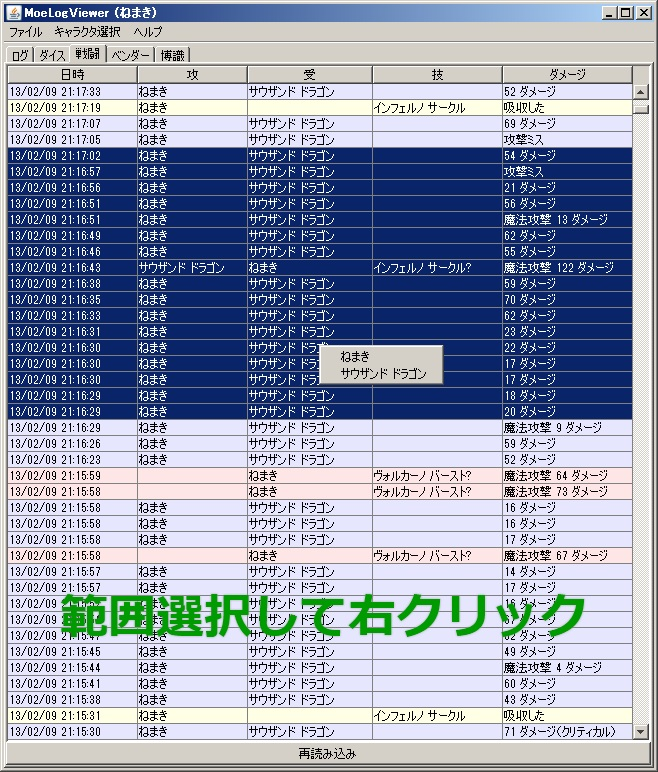 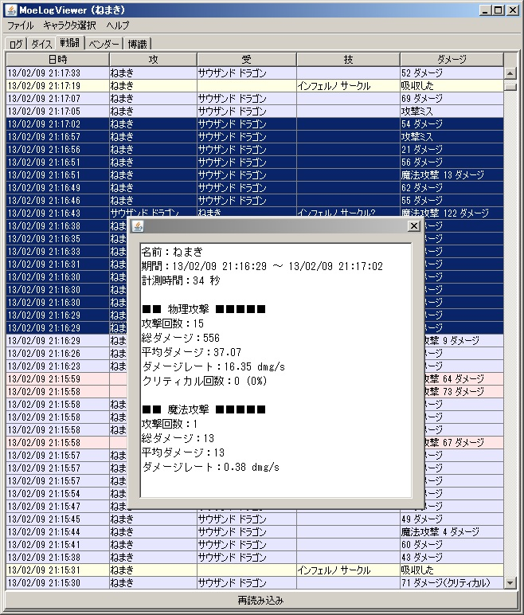 インストールとアンインストール １．まずJREのインストールが必要なので TOPページのJREインストールガイドを読んでJREをインストールします。 ２．MoeLogViewer 本体をダウンロードします。 ファイルは MoeLogViewer.jar という１ファイルのみで7 解凍等の必要はありません、このまま使用します。 ブラウザによっては(主にIE8以降)MoeLogViewer.jar というファイル名が 勝手に改名されて MoeLogViewer.zip にされてしまいます。 MoeLogViewer.jar に戻して使用してください。 アンインストール MoeLogViewer.jar と 設定を保存した際に作成される MoeLogViewer.properties を消すだけです。 レジストリ等は一切使用していません。 使い方 MoeLogViewer.jar をダブルクリックしてツールを起動します。 ※解凍ソフトに注意 既にインストールされている解凍ソフトによってはjarファイルを解凍してしまう場合があります。 その場合、MoeLogViewer.jarを右クリック、プロパティからプログラムをJAVAに変更してください。 直接関連付けする場合、 C:\Program Files (x86)\Java\jre7\bin\javaw.exe とかになります。 （OS,設定等により変化します） ※より快適にするために MoeLogViewer.jar があるフォルダに MoeLogViewer.properties という設定ファイルが作成されます。 デスクトップに作成されると邪魔なので MoeLogViewer.jar をどこか適当なフォルダに入れておき デスクトップにはショートカットを貼っておくのが良いかと思います。 初回起動時には下記のような表示がされますが、保存データが無いからです。 気にしないでください。 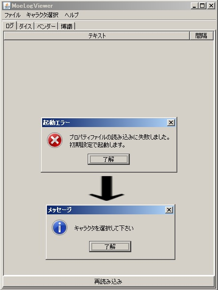 メニューのファイルから設定を選択し、各種設定を行います。 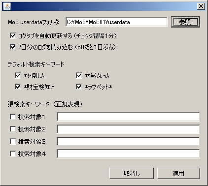 設定について MoEフォルダだけ設定してあげれば作成者オススメ設定ですぐ使えるようになります。 残りの設定は説明を読んだ上で好みの調整をしてください。 MoEフォルダ このツールで表示するMoEのuserdataフォルダを指定します。 自分の例だと 「E:\GONZO ROSSO\Master of Epic\userdata」 です。 直接入力しても構いませんが、より簡単に設定するには参照ボタンでディレクトリを設定するといいでしょう。 ログタブを自動更新する ログタブを１分毎に更新します。 ファイルの日付チェックをして、変更がある場合のみ再読み込みするので負荷は殆どありません。 ２日分のログを読み込む MoEのログ出力仕様でログファイルは日付毎に分けられます。 したがって最新のログファイルのみ読み込むと 0:00 を超えた時点で 数分前の前日のログがみえなくなってしまいます。 その為に余裕をもって２日分のログファイルを読み込む設定です。 余程重いようでしたらチェックを外してもいいですが基本的には有効でよいかと思います。 デフォルト検索キーワード（４種） よく使うと思われる検索キーワードです。 チェックをONにすればログ抽出条件に含まれます。 拡張検索キーワード（４種） ユーザが自由に定義できる検索キーワードです。 全く入力しない状態で特に問題ありません、自分で抽出条件を細かく記述したい場合に設定してください。 ログの１行１行に対してマッチング判定を行うための正規表現文字列を入力します。 デフォルト検索キーワードがそのままサンプルになっているので、真似て記述すればある程度は書けるかと思います。 〜と〜を含み〜を含まない等の複雑な条件はプロっぽい人に依頼するかぐぐってなんとかして下さい。 その他 適用ボタンを押下すると設定が有効となり、取消しボタンを押下すると設定は反映されません。 適用ボタンで設定は即座にセーブされますが、表示内容は再読み込みボタンを押下して更新してくだい このツールが参照するログファイルは mlog_年_月_日_0.txt です。 つまりシステムウィンドウのみが対象となります。 MoEはデフォルトではログファイルを出力しない為、MoEでログを出力するように変更する必要があります。 ログ出力の方法はMasterOfEpic公式ページのゲームガイド→アドベンチャーガイド→プレイ環境のカスタマイズを参照してくだい。 MoEのクライアントがログをファイルに書き出すのは５分に１回程度なので 最大５分前後のラグがあります。 Version 5.3 以前から最新版にする場合の注意点 ログフォルダの指定方法が変更されました。 キャラクタのディレクトリを指定するのではなく、userdataフォルダを指定するように変更して下さい。 個別のキャラ選択はメニューのキャラクタ選択を使用します。 それではより良いMoEライフを。 ラル・ファク・イル・ファッシーナ